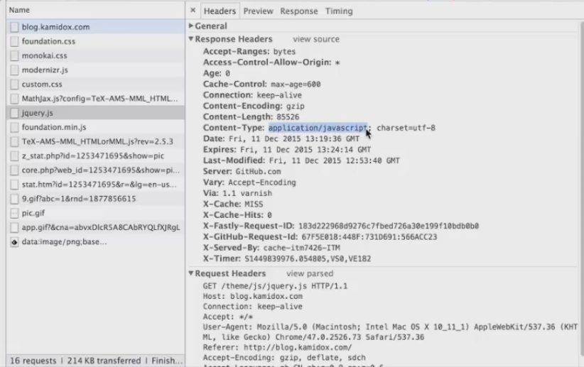

python爬虫之http协议
http协议是互联网里面最重要，最基础的协议之一，我们的爬虫需要经常和http协议打交道。
http报文展示：
http报文
打开开发者工具，查看http的包
抓包查看
完整的http请求

http请求及构成
http请求报文介绍
1）方法：GET/POST
GET获取远程服务器；/ 远程服务器的相对路径，这里是根目录，接下来跟的是一个http的协议号
2）URl：相对路径
3）Host：目标主机
远程服务器的主机地址
4）Accept：可接受的媒体类型
客户端希望的连接处理方式；connection：希望连接继续保持，不要去关闭它
5）User-Agent：浏览器身份
6）Accept-Encoding：编码类型
gzip：表示我可以接受这种压缩的媒体，压缩的媒体就可以减少这个带宽的占用，可以提高传输的速度。
7）Accept-Language：接受的语言
Zh-CN：中文，有些网站做的比较好的时候，你用中文的操作系统去访问它会显示中文，你用英文的操作系统去访问它会自动的显示英文，在早期的网站是需要用东西点，后来就越来越好，它会自动去识别，实际上就是使用这个字段来判别你到底使用的是什么字段。
这个就是http的完整请求，这个就是客户端发送给服务器的，收到这个请求后，它会给我们一个应答，应答内容如下。
这个应答里面第一个是http的协议号，第二个部分包含的是http的应答码，这个应答码是200的时候是正确的，第三个部分表示这个应答的信息。第二行表示这个应答的服务器是谁。
http应答及其构成
http应答报文介绍
1.应答码
2xx：成功
1)200：ok
2)206:Partial Content
3xx：重定向（客户端想要获取的资源，服务器告诉你，现在不在这了，你要到另外的地方去取，301和303都表示要到另外的地方去取，会给你提供新的URL）
1)301：Moved Permanently
2)303:See Other
3)304：Not Modifide（没有修改）
4xx：客户端错误（服务端会认为你客户端发的请求不对，比方说请求的格式不对，或者参数不对之类的）
1）400：Not Found（你要请求的资源，在服务器上不存在）
5xx：服务端错误
1）500：Internal Server Error（比如某个网站被人攻击了，没有办法访问，就会出现这样的错误）
2)501：Not Implemented
2.Server:应答服务器
3.Content-Type:应答的数据类型 （在客户端，我们就是根据这样的字段，来判断这个媒体到底是什么类型，然后做相应的不同处理）
1）text/*
2）image/*
3）audio/*
4）Video/*
5）/
示例：
在应答里面，Content-Type的text是html类型，charset是utf-8。
我们来看一下应答，我们的应答就是一个html的文档，charset是utf-8的，这个就是一个标准的网页了。
再看看Accept-Encoding，为了优化这种网络传输，它就发了这种gzip的内容过来
那我怎么看它到底是不是压缩了呢？应答的主体部分只有4315个字节，我们来看看它到底有多少个字节。
全选后我们可以看到，总共是312行，17826个字节，为什么会有这个差异呢？是因为我这边17k的内容是经过了gzip的压缩以后只剩下了4k左右，所以这样可以大大的减少这个网络传输的数据量，加快上网的速度。

4.Last-Modified：上一次修改时间
5.Content-Encoding：应答编码类型
这里使用的是gzip，因为请求的时候只支持gzip，所以它应该是gzip压缩，这样的好处就是可以减少网络数据传输。
6.Content-Length：应答的内容长度，这里可以看到是4315个字节。
这样一个完整的请求就是我们的一个http协议，我们发送一个请求过去，然后一个应答回来。这里的应答有一个很重要的就是应答码，这个我们以后在编程的时候会经常和它打交道。
更多请求和应答：
1.下载css的请求
1)If-Modified-Since
2)304 Not-Modified
2.下载图片的请求
1）Content-Type：image/*
我们可以看到，这个页面不止一次发送了http请求，这个是第一个请求，它的编码类型也是gzip，也就是说，它已经经过压缩了。
我们再看另一个，jquery，它的Content-Type明确的告诉这个客户端，它是JavaScript的脚本，那我们的浏览器遇到这样的媒体类型的时候，它就会去加载jquery的引擎去执行它。

我们再看一个图片，这边这个url请求的地址就不一样，它现在已经不是在根目录下了，和第一个分析的不一样，另外它的Host也不一样，它的应答内容时iamge/gif，告诉我们客户端这是个图片。
我们来看看这个图片到底长什么样
那么一个完整的http应答到底长什么样，一个是应答的头部，如下。
接下来，两个连续的回车，如果没有经过压缩，完整的就是如下，当然，我们刚刚的应答是经过压缩的，所以它后面的这部分就是应答的body，body这部分跟的就是压缩后的二进制数据。
【本文由麦子学院独家原创，转载请注明出处并保留原文链接】